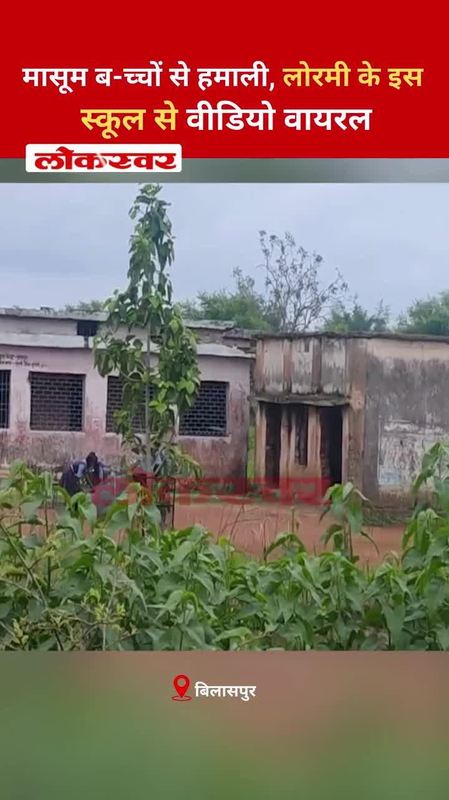

Bilaspur News Hub
EDUCATION1

Guru Ghasidas Vishwavidyalaya · Published: 2026-07-24 | Scraped: 2026-07-24 13:18:22
The university has launched its official English website, offering information on courses, admissions, and administrative services. It aims to improve accessibility for students and staff.
EVENT4

Lokswar · Published: Fri, 24 Ju | Scraped: 2026-07-24 15:26:56
A massive rock fell on a vehicle in Himachal Pradesh's Lahul-Spiti district, killing 13 people. Rescue teams are working to extract survivors and clear debris.
The Hitavada · Scraped: 2026-07-24 11:36:51
The Wankhede team will captain Maharashtra in the upcoming junior hockey nationals, marking a significant opportunity for the city. This event highlights the growing hockey talent in the region and aims to boost youth participation.
The Hitavada · Scraped: 2026-07-24 11:36:51
Janvi scored two crucial goals, leading Pragatiks to victory in the title contest. Her performance showcased her skill and determination, securing the team's success.

G News Bilaspur · Published: 2026-07-24 | Scraped: 2026-07-24 13:18:22
Lord Jagannath returned to his temple after nine days amid festive Bahuda Yatra celebrations, drawing large crowds of devotees. The event marked a joyous conclusion to the religious festivities.
GOVERNMENT8

Nai Dunia Bilaspur · Published: Sat, 25 Ju | Scraped: 2026-07-25 07:58:14
सुप्रीम कोर्ट ने हाई कोर्ट के मुआवजा फैसले को पलट दिया, कहा कि हत्या साबित न होने पर मोटर दुर्घटना मुआवजा नहीं दिया जा सकता। यह फैसला आनंद अग्रवाल मामले में देयता के कानूनी मानकों को स्पष्ट करता है।

CG Wall · Published: Sat, 25 Ju | Scraped: 2026-07-25 07:58:14
एसएसपी बिलासपुर ने वाहन चालकों के लिए ई-चालान भरने की आसान ऑनलाइन प्रक्रिया साझा की, जिससे ट्रैफिक जुर्माने का भुगतान बिना किसी परेशानी के हो सके।

Nai Dunia Bilaspur · Published: Sat, 25 Ju | Scraped: 2026-07-25 09:33:01
A professor collapsed and died in a bathroom shortly after performing a song, shocking the academic community. The incident highlights the need for health safety measures during public events.
.jpg)
Nai Dunia Bilaspur · Published: Fri, 24 Ju | Scraped: 2026-07-24 13:18:22
A snake‑bite compensation scam has implicated several Simhs doctors, prompting possible disciplinary action, while a forensic expert has taken an extended leave. The case highlights alleged malpractice in claim processing.

Lokswar · Published: Fri, 24 Ju | Scraped: 2026-07-24 15:26:56
In Bilaspur, a road and drainage system were constructed on government land without permission, yet authorities have taken no action despite a month‑long complaint. Residents demand strict enforcement against illegal construction.
Lokswar · Published: Fri, 24 Ju | Scraped: 2026-07-24 15:26:56
The central government and CJP representatives met at Constitution Club in New Delhi and agreed on two key demands. The discussion aimed to address concerns and find common ground. The outcome is expected to impact policy and judicial cooperation.
Lokswar · Published: Fri, 24 Ju | Scraped: 2026-07-24 21:00:56
Kanker forest department in Pakhanjur arrested 11 smugglers trafficking live turtles, cracking down on wildlife smuggling. The operation underscores ongoing efforts to curb illegal wildlife trade.

G News Bilaspur · Published: 2026-07-24 | Scraped: 2026-07-24 13:18:22
Chief Minister Vishnu Deo Sai ordered strict action on the NEET paper leak to prevent cheating and ensure fair exams. The government will take concrete steps to safeguard exam integrity.
HEALTH3

Nai Dunia Bilaspur · Published: Fri, 24 Ju | Scraped: 2026-07-24 11:36:51
The new blood center at Bilaspur SIMS Super Specialty Hospital will enhance blood availability and patient care. It marks a significant advancement in Chhattisgarh's public health infrastructure.

Nai Dunia Bilaspur · Published: Fri, 24 Ju | Scraped: 2026-07-24 15:26:56
Doctors at Bilaspur SIMS successfully performed surgery to open the jaw of a 24-year-old man who had been unable to open his mouth since birth. The rare procedure restored his ability to eat and speak, marking a significant medical breakthrough.

G News Bilaspur · Published: 2026-07-24 | Scraped: 2026-07-24 13:18:22
Three children from Aurapani village in Kuta have been diagnosed with malaria, prompting health alerts. Local health officials have initiated preventive measures and urged residents to take precautions against mosquito bites. The situation is being monitored closely to contain the outbreak.
INFRASTRUCTURE2

Lokswar · Published: Sat, 25 Ju | Scraped: 2026-07-25 07:58:14
राष्ट्रीय राजमार्ग-130बी पर बस और ट्रक की भिड़ंत से दर्जनों यात्री घायल हो गए, तीन की हालत गंभीर है। आपातकालीन सेवाओं ने घायलों को अस्पताल पहुँचाया।

CG Wall · Published: Fri, 24 Ju | Scraped: 2026-07-24 13:18:22
After a 12‑year hiatus, the traffic department resumed enforcement in Ramanganj, reinstating road discipline following the collector’s strict orders. Local commuters welcomed the return of traffic regulation.
INSTAGRAM NEWS20

The Instagram page @bilaspur_today_news announces the divine darshan of Mata Naina Devi on 25 July 2026, featuring the 'high mountain' shrine. Devotees can expect a special spiritual experience on this auspicious date.
चिंगराजपारा शराब भट्ठी के पास मारपीट, 4 आरोपी गिरफ्तार #BilaspurCrime #SarkandaPolice #ChhattisgarhPolice #LawAndOrder #CrimeUpdate #ActionAgainstCriminals #PublicSafety #BNS #BilaspurUpdates by @lokswar.in

मासूम बच्चों से हमाली, लोरमी के इस स्कूल से वीडियो वायरल #Education #Learning #SchoolLife #StudentSuccess #Teaching #Classroom #BackToSchool #EducationalResources #StudyTips #AcademicExcellence #mungeli_cg_ #governmentjobs #GovernmentScheme #governmentschooleducation by @lokswar.in
Details about Bilaspur Students & Public Protests 🪧 #bilaspurct #bilaspur #hamarbilaspur #bilaspurcity #bilaspurians by @bilaspurct
Ye hai Madras Cafè! ☕️🫓Agar ap khoj rahe hai bilaspur me amazing authentic tastes and flavours that makes you feel like you are in chennai! 😍 Location 📍Mungeli bypass, front of real heaven, near lakhme saloon, Mangla Chowk, Bilaspur.#bilaspurfoodie #authenticsouthindian #dosa #foodie #bilaspurcity by @whatsupbsp


The accused befriended a young woman on Instagram, used a malicious APK to hack her phone, and blackmailed her. Authorities in Raigarh have arrested him, highlighting concerns over cyber fraud.


A railway court in Bilaspur sentenced a man to six years imprisonment for stealing an ITBP jawan's pistol, emphasizing strict action against weapon theft.


A massive peepal tree collapsed in Kududand, striking a young woman and causing serious injuries, highlighting the need for regular tree maintenance in public areas.


A video shows two youths being mercilessly beaten with cable wires and belts in a public area, sparking outrage and calls for stricter law enforcement.


The overflow of Bilaspur's largest reservoir, Kharang, created a scenic sight and drew crowds of tourists. Authorities note the natural beauty is boosting local tourism and visitor numbers.


A new digital billing system using smart meters will make electricity billing transparent and allow precise consumption tracking. This move aims to improve accuracy and reduce disputes for consumers.


Malaria outbreak in Aurapani village of Kota prompted mass medicine distribution to households. Health officials are conducting surveys and fogging to control the spread and protect residents.


Students in Raipur protested demanding Education Minister Dharmendra Pradhan's resignation over a NEET paper leak. The demonstration highlights growing concerns about exam integrity and accountability.

The post emphasizes that cleanliness defines healthy and prosperous villages, highlighting the Swachh Bharat Mission (Rural). The state advisor stresses hygiene as key to rural development.

It is a repost from the official Bilaspur district Instagram account. It likely shares community updates or events for the local audience.
प्रशासनिक सुस्ती:-सरकारी ज़मीन पर बनाई सड़क और नाली,शिकायत के एक महीने बाद भी कार्रवाई शून्य. #Bilaspur #AdministrativeNegligence #LandEncroachment #BilaspurNews #PublicMoneyWaste #BilaspurMunicipalCorporation #ChhattisgarhNews #CGNews #CorruptionAlert #LocalIssue by @lokswar.in
A businessman’s vacant house in Nehru Nagar was robbed, with cash, jewellery and precious stones stolen, causing millions in loss. Police have started investigations to trace the culprits.
The Bilaspur District Instagram page posted a generic update, likely sharing community news or announcements. The content appears to be a routine post from the district’s official account.
The monsoon season enhances the beauty of Korba’s forests, making them appear more vibrant and lush. Nature thrives as rainfall transforms the landscape.
A significant theft occurred in Nehru Nagar, Bilaspur, where businessman Rajneesh Seth was targeted. Police at Civil Line station have launched an investigation to trace the stolen items.
NEWS25

Nai Dunia Bilaspur · Published: Sat, 25 Ju | Scraped: 2026-07-25 05:01:11
<img src="https://img.naidunia.com/naidunia/ndnimg/25072026/25_07_2026-e_challan_driving_license.jpg" />यातायात पुलिस के अनुसार फिलहाल ई-चालान पोर्टल पर सॉफ्टवेयर अपडेट का कार्य चल रहा है। ऐसे में वाहन चालक नेक्स्ट जेन ई-चालान के माध्यम से कंप्यूटर या लैपटाप से ऑनलाइन चालान शुल्क जमा कर सकते हैं।

Nai Dunia Bilaspur · Published: Sat, 25 Ju | Scraped: 2026-07-25 05:01:11
<img src="https://img.naidunia.com/naidunia/ndnimg/25072026/25_07_2026-fake_snakebite_compensation_racket.jpg" />सर्पदंश मुआवजा राशि हड़पने वाले संगठित गिरोह का बिलासपुर पुलिस ने पर्दाफाश किया है, जहां अत्यधिक शराब सेवन, जहरीले पदार्थ या दुर्घटना से हुई मौतों को सर्पदंश में बदलकर लाखों का फर्जीवाड़ा

CG Wall · Published: Sat, 25 Ju | Scraped: 2026-07-25 05:01:11
बिलासपुर… शिक्षा विभाग एक बार फिर विवादों में है। इस बार मामला ऐसे शिक्षक की बहाली और पदस्थापना का है, जिस पर मूल्यांकन कार्य के दौरान स्ट्रांग रूम प्रभारी से अभद्रता करने, मूल्यांकन प्रक्रिया बाधित करने तथा एक महिला शिक्षिका को व्हाट्सएप पर आपत्तिजनक संदेश भेजने के आरोप लगे थे। विभागीय जांच क

CG Wall · Published: Sat, 25 Ju | Scraped: 2026-07-25 05:01:11
बिलासपुर…बहुचर्चित सर्पदंश मुआवजा घोटाले में एफआईआर दर्ज होने और लगातार हो रही गिरफ्तारियों के बीच जिला प्रशासन ने पहली बड़ी विभागीय कार्रवाई करते हुए एक साथ तीन राजस्व कर्मचारियों को निलंबित कर दिया है। कलेक्टर संजय अग्रवाल के निर्देश पर जारी अलग-अलग आदेशों में तीनों कर्मचारियों को तत्काल प्र

Lokswar · Published: Sat, 25 Ju | Scraped: 2026-07-25 05:01:11
Prime Minister Narendra Modi's Instagram video achieved the highest number of views within 24 hours, setting a new world record. Meanwhile, CJP protesters and the government are scheduled to meet again today to discuss ongoing issues.

CG Wall · Published: Fri, 24 Ju | Scraped: 2026-07-24 17:24:41
बिलासपुर…शहर के लोकप्रिय सोशल मीडिया मंच ‘हमर बिलासपुर’ की ओर से आयोजित ‘कौन बनेगा फुटबॉल सम्राट’ फाइनल प्रेडिक्शन प्रतियोगिता के विजेताओं का शुक्रवार को सम्मान समारोह आयोजित हुआ। पूर्व मंत्री एवं बिलासपुर विधायक अमर अग्रवाल ने विजेताओं को स्मृति-चिह्न प्रदान कर सम्मानि

CG Wall · Published: Fri, 24 Ju | Scraped: 2026-07-24 17:24:41
बिलासपुर… बिलासपुर की राजनीति में शुक्रवार को उस समय नया सियासी तापमान देखने को मिला, जब भाजपा के वरिष्ठ विधायक और पूर्व मंत्री अमर अग्रवाल ने बिना नाम लिए पूर्व विधायक शैलेष पांडे पर अब तक का सबसे तीखा हमला बोला। खेल प्रतियोगिता मे सफल गणमान्य लोगों बीच आयोजित संवाद कार्यक्रम में अमर ने विधा

CG Wall · Published: Fri, 24 Ju | Scraped: 2026-07-24 17:24:41
बिलासपुर… बिल्हा थाना क्षेत्र में अवैध महुआ शराब के कारोबार पर पुलिस ने एक और बड़ी कार्रवाई करते हुए नाले के किनारे संचालित हो रही हाथभट्ठी को ध्वस्त कर दिया। मौके से 30 लीटर कच्ची महुआ शराब के साथ शराब बनाने में इस्तेमाल होने वाले उपकरण जब्त किए गए हैं। पुलिस ने आरोपी को गिरफ्तार कर …

Lokswar · Published: Fri, 24 Ju | Scraped: 2026-07-24 17:24:41
<p>जांजगीर-चांपा पुलिस ने किरायेदार सत्यापन अभियान के दौरान बड़ी कार्रवाई की है। बम्हनीडीह थाना क्षेत्र के ग्राम अमोदी में एक मकान मालिक द्वारा दूसरे राज्य के चार लोगों को बिना किरायानामा और पुलिस को सूचना दिए किराये पर रखने का मामला सामने आया है। पुलिस ने मकान मालिक के खिलाफ भारतीय न्याय संहिता की

The Hitavada · Scraped: 2026-07-25 05:01:11
The Hitavada · Scraped: 2026-07-25 05:01:11
The Hitavada · Scraped: 2026-07-25 05:01:11

The Hitavada · Scraped: 2026-07-25 05:01:11
The Hitavada · Scraped: 2026-07-25 05:01:11
The Hitavada · Scraped: 2026-07-25 05:01:11
The Hitavada · Scraped: 2026-07-25 05:01:11
The Hitavada · Scraped: 2026-07-25 05:01:11
The Hitavada · Scraped: 2026-07-25 05:01:11
The Hitavada · Scraped: 2026-07-25 05:01:11
The Hitavada · Scraped: 2026-07-25 05:01:11
POLICE7
.jpg)
Nai Dunia Bilaspur · Published: Sat, 25 Ju | Scraped: 2026-07-25 07:58:14
छत्तीसगढ़ हाई कोर्ट ने पिता की याचिका खारिज कर दी, सौतेली बेटी से बलात्कार के मामले में 20 साल की जेल की सजा को बरकरार रखा। यह फैसला ऐसे गंभीर अपराधों के लिए कड़ी सजा को दर्शाता है।

CG Wall · Published: Sat, 25 Ju | Scraped: 2026-07-25 07:58:14
बिलासपुर के चिंगराजपारा में शराब की दुकान के पास हुई मारपीट से दहशत फैल गई, चार उपद्रवियों को गिरफ्तार कर जेल भेजा गया।

CG Wall · Published: Fri, 24 Ju | Scraped: 2026-07-24 15:26:56
If an online traffic fine remains unpaid, authorities may take legal action leading to court summons, license suspension, and vehicle impoundment. Paying promptly avoids severe consequences for the driver.

CG Wall · Published: Fri, 24 Ju | Scraped: 2026-07-24 15:26:56
Thieves allegedly used an air conditioner unit to break into a merchant's vacant house in Civil Lines, stealing items worth lakhs. Police are investigating all angles to identify the culprits.

CG Wall · Published: Fri, 24 Ju | Scraped: 2026-07-24 19:18:54
Police in Bilaspur’s rural area cracked down on illegal mahua liquor production, arresting a suspect and seizing 60 liters of the contraband. This follows previous efforts to curb the illicit trade in the region.

Lokswar · Published: Fri, 24 Ju | Scraped: 2026-07-24 19:18:54
Thieves broke into a businessman’s vacant residence in Nehru Nagar, stealing cash, jewelry, and precious stones worth millions. Police have launched an investigation to trace the culprits.

G News Bilaspur · Published: 2026-07-24 | Scraped: 2026-07-24 13:18:22
Thieves broke into a businessman’s vacant house in Nehru Nagar, stealing cash, jewellery and family heirlooms worth millions, prompting a police investigation. Authorities are searching for suspects and reviewing security measures.
YOUTUBE VIDEOS8


GRAND NEWS BILASPUR:GRAND NEWS BILASPUR FINAL NEWS 25.07.2026 MORNING @News18MPChhattisgarh ...
The Bilaspur-Raipur highway is severely deteriorated, with large potholes posing fatal risks to commuters. Authorities have been urged to repair the road, especially in the Tifra stretch, to prevent accidents.


A court has sentenced the accused in a high-profile arms theft case, delivering justice to the victims. The verdict underscores the police's commitment to curbing illegal weapon trafficking.


It is a routine evening news bulletin from Bilaspur Grand News covering updates on 24 July 2026. The broadcast includes regional news, events, and announcements for the day.


Residents complained that authorities constructed roads and drains and sold them to private parties, causing public outrage. Authorities have been asked to investigate and stop the illegal sales. This threatens proper urban planning.


Guru Ghasidas University embroiled in fresh controversy / गुरु घासीदास विश्वविद्यालय फिर विवादों में
The university faces new disputes, possibly regarding admissions or administrative issues, drawing criticism from students and staff. Authorities have been urged to address the concerns promptly. The controversy highlights ongoing governance challenges.


While the businessman was away on a pilgrimage, thieves looted his home, stealing items valued at around 5 crore rupees. Police have launched an investigation to trace the culprits. The incident highlights vulnerability of unoccupied properties.


Bilaspur introduces prepaid smart meters in government offices, aiming to improve billing transparency and reduce electricity theft. The initiative follows a digital billing system rollout, ensuring precise consumption monitoring across departments.